图像/音频生成的套路概述
自回归的生成套路
Image/Sound的生成可以借鉴LLM的套路，变为Next token prediction。我们只需要预测下一个token是什么，然后拼在一起就构成了输出。这里有一个问题：LLM的token是一个个的词组，那Image/Sound生成的token单元对应什么？
在实操中，我们可以认为Image就是由很多的token构成的一个矩阵。我们要训练的Image generation model的工作很简单：把Image tokenized / 从token还原Image。 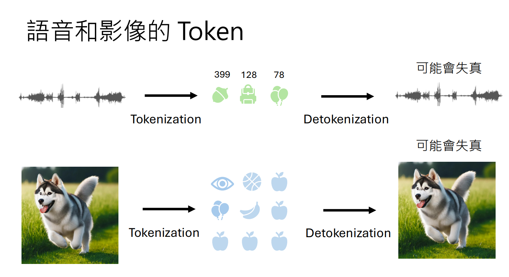 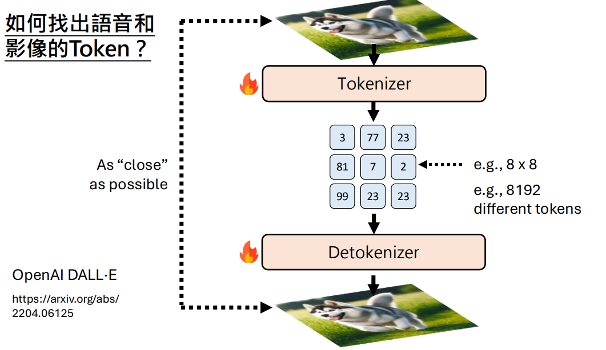
上面举得例子token呈现二维排列，其实我们可以直接把image token当成one dimension。这样的话就和LLM预测下一个token一样了。 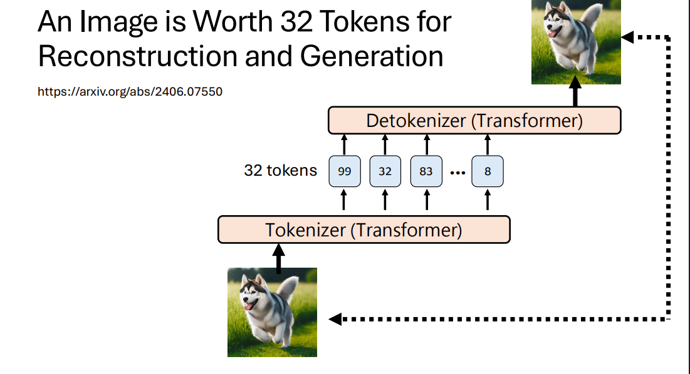
继续深入，LLM生成文字天然有顺序，从左到右。但图像生成我们可不可以扩展一下，乱序生成呢？MaskGIT就是这样做的，每次随机mask一些token，让model尝试预测这些token。  在Inference的时候，如果token同时产生，因为不同token没有协调，可能会生成乱的图片（第一个token想生成动物的head 第3个也想 这样就乱了）。因此可以每次只保留K个token，运行多轮直到完全生成。 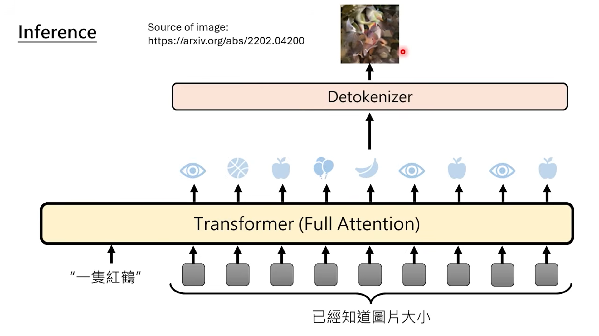 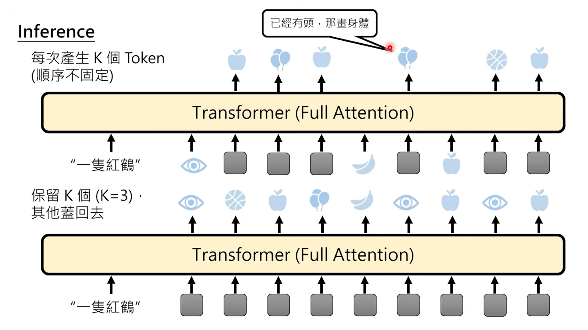 如下图，由于随机mask，生成的顺序是不固定的。 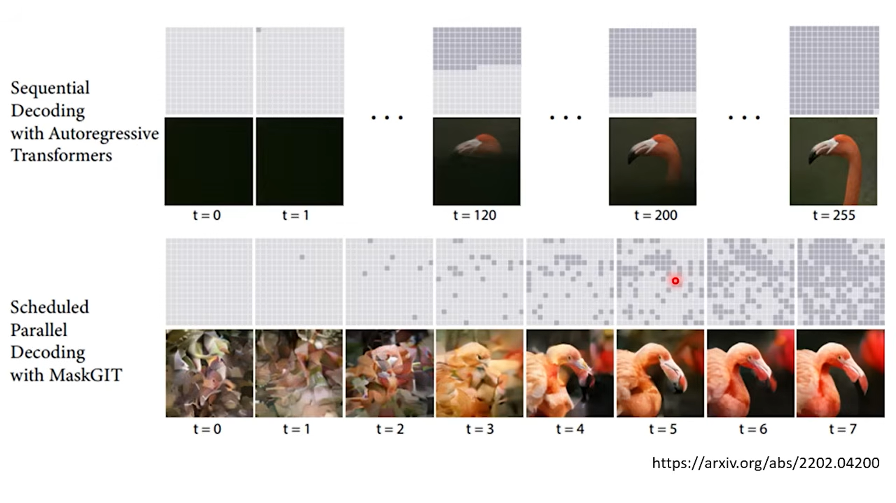
在Inference的时候，如果token同时产生，因为不同token没有协调，可能会生成乱的图片（第一个token想生成动物的head 第3个也想 这样就乱了）。因此可以每次只保留K个token，运行多轮直到完全生成。 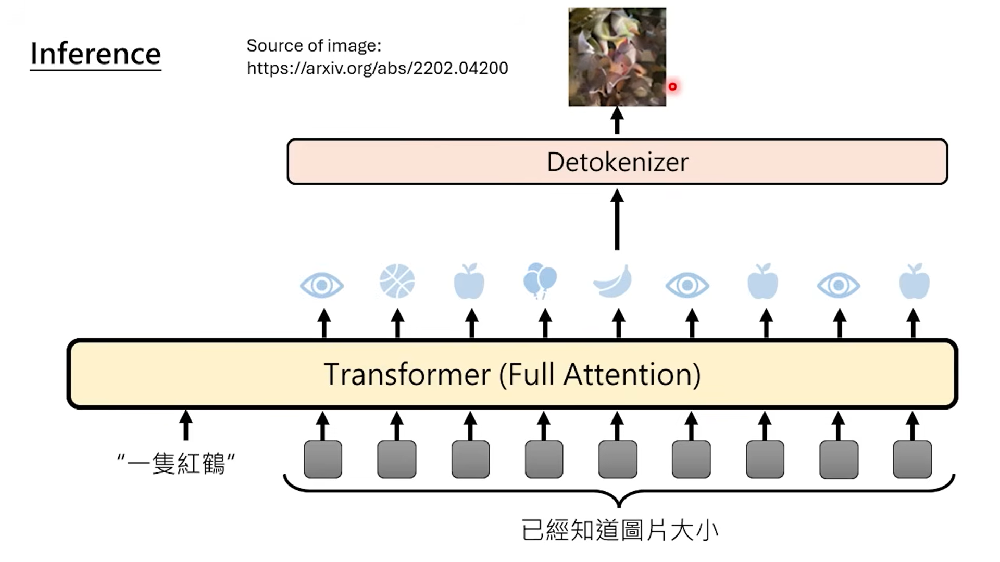 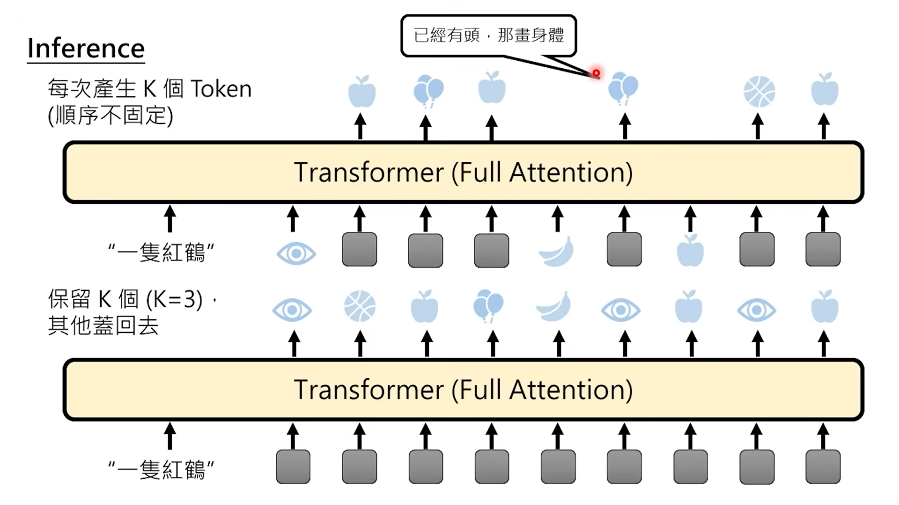 如下图，由于随机mask，生成的顺序是不固定的。 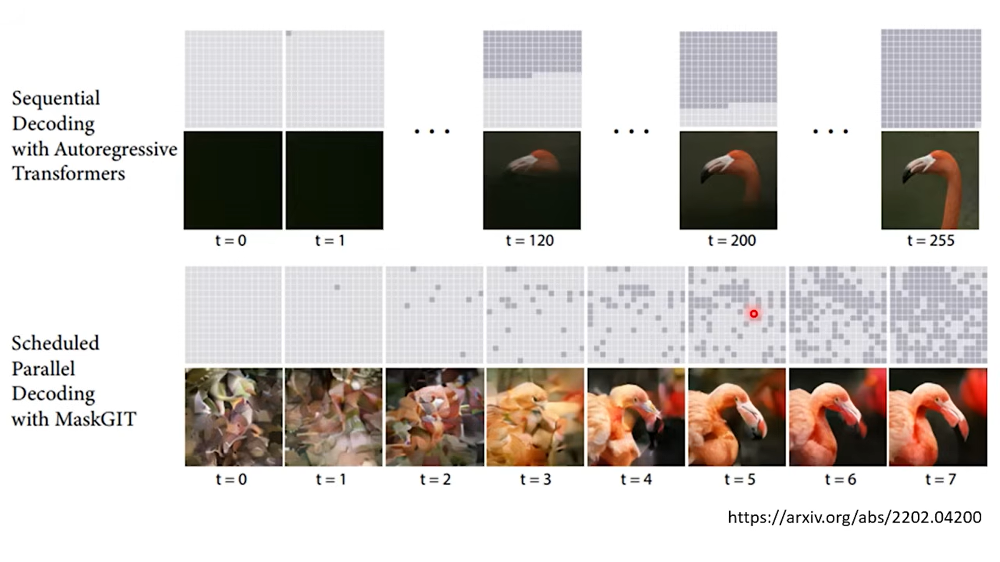
Training中怎么评估图片的close?
上述的训练由tokenizer和detokenizer构成，需要一起训练让图片尽可能接近。那么如何评估图片/音频之间的接近呢？
- 绝对数值的接近 对音频来说，每个采样的音频点的绝对数值要接近，那就可以算一个Regression Loss。直接相减平方和；对图像来说，每个pixel要接近，也可以直接算平方和。 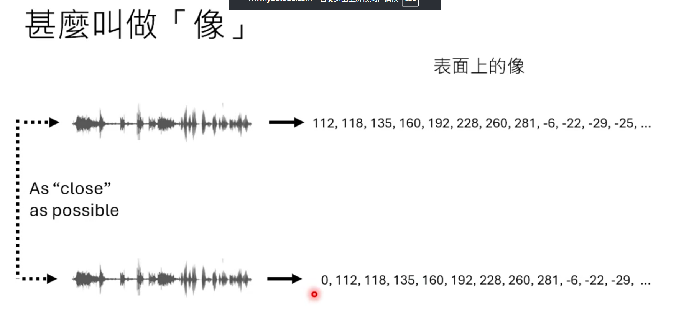
- perceptual loss 可以让一个能够理解Image/Sound的模型，输入两个数据，把模型的中间向量抽出来，然后比较两个向量的距离。(理论上来说，两个近似的图片，含义类似，在特征空间里的距离也应该比较接近 这种做法和Text Embedding差不多) 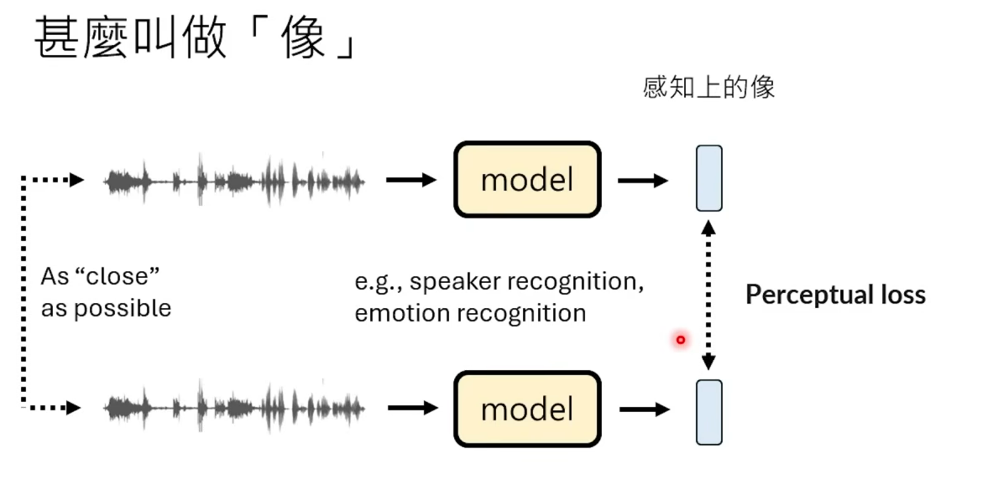
- 借鉴GAN的思路，让判别器判定 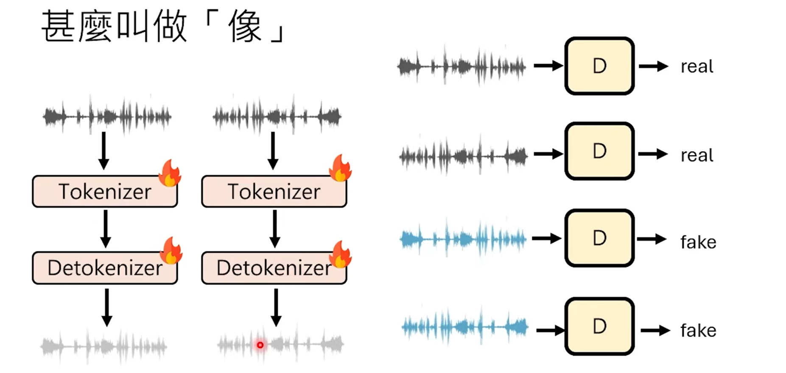
Token的极限
采用自回归的方式，predict next token是有一些极限的。token对信息的高度压缩会导致我们损失很多信息。（为什么语言模型就可以呢？我觉得language本身就是对信息的高度压缩，天然是一个个token。而且实操中，LLM也是先把token映射到Embedding dim然后再predict next token。显然这也是因为token损失了太多的信息，导致反而要先扩展再predict）
举个例子，16*16的pixel用8192个token代替，这里还原之后的效果很差。token限制了我们的信息压缩和解压。 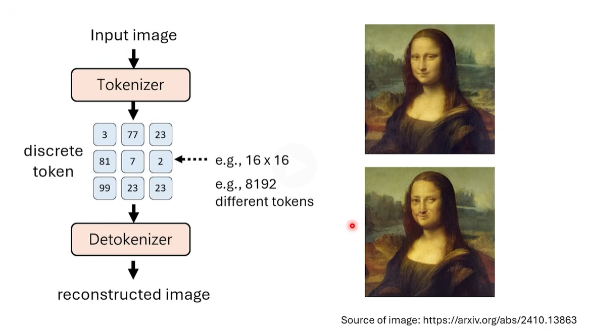
我们可以考虑用continuous token(其实就是vector)来做图像生成。 但是这里会遇到一些问题，对于图像生成，我们不需要vector和目标vector完全一样，而是只要在一个分布就可以（奔跑的狗 可以在街上也可以在草地，都不是错误的target）。 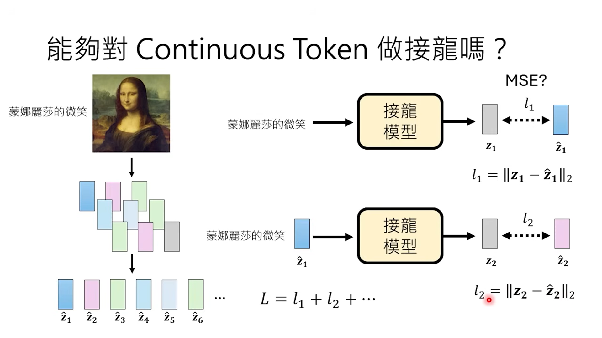 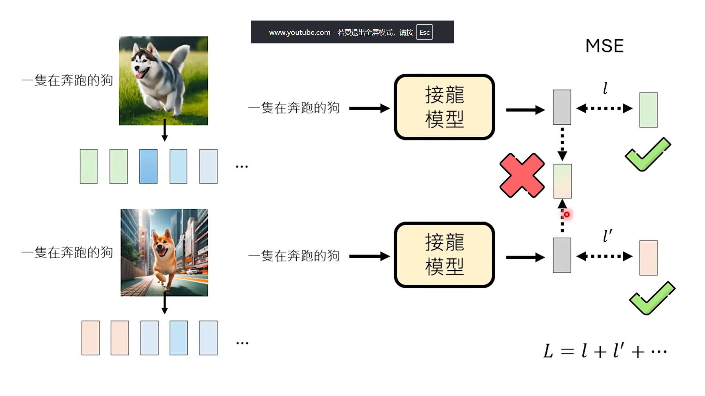 这个问题在Language model里面有没有？没有。因为LLM采用的是离散的token，我们会根据概率分布采样一个token。而连续的token会产生两个target的mixture。
正因如此，产生了新的图像生成范式（VAE GAN Diffusion…）请看next charpter
新的图像生成思路
我们想要产生连续的token(vector)，可以考虑生成一个概率分布，然后再从这个概率分布中采样token。 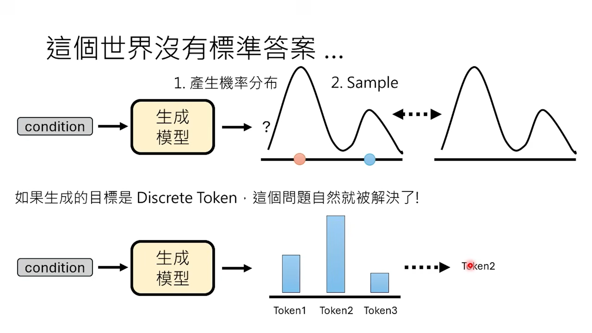 一开始的研究认为，可以生成概率分布相关的参数，比如假设是一个多变量的Gauss distribution，我们可以预测均值和协方差。但是有个问题，就是没办法拟合一些复杂的分布（Gauss distribution怎么样都是椭圆） 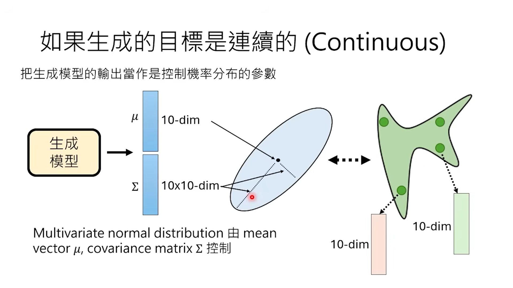 后面的研究统称为“Generative Model”。他们的考虑是，既然没办法直接拟合分布，我可以拟合从一个分布到另一个分布的Transform Method。也就是说，我先从一个已知的分布中采样，然后想办法把他变换成目标分布。Model的作用就是实现这种变换。 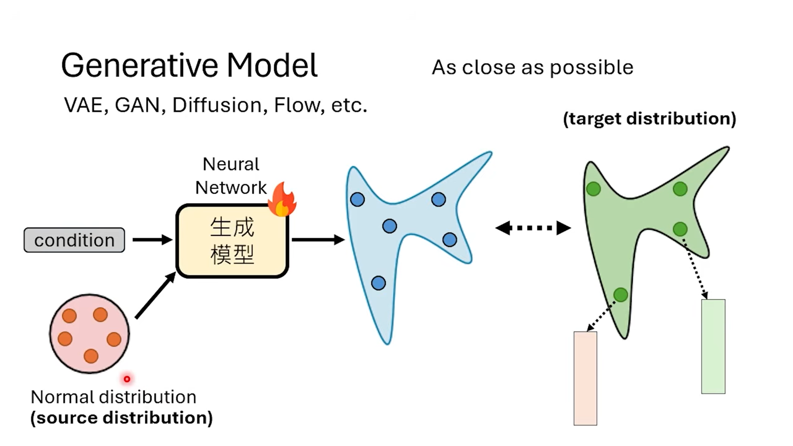
一些可以继续深入学习的参考资料
| 主题 | 标题 | URL | 课程/年份 |
|---|---|---|---|
| VAE (变分自编码器) | VAE / Unsupervised Deep Learning - Deep Generative Models (Part I) | https://youtu.be/8zomhgKrsMQ |
2016 机器学习 |
| GAN (生成对抗网络) | Introduction of Generative Adversarial Network (GAN) / 李宏毅 | https://www.youtube.com/watch?v=DQNNMIAp5lw&list=PLJV_eL3UvTsMq6JEFPW35BCiOQTsoQwNw |
2018 机器学习及其深层与结构化 |
| Normalizing Flow (归一化流) | Normalizing Flow / Flow-based Generation Model / Coupling Layer | https://youtu.be/uXY18nzdSsM |
2019 机器学习 |
| Diffusion Model (扩散模型) | Diffusion Model / Denoising Diffusion Probabilistic Models (DDPM) | https://www.youtube.com/watch?v=a2BugJzmz-o&list=PLJV_eL3UvTsNi7PgeKEUFSYVJIAJXRsP- |
2023 机器学习 |
| Flow matching | https://www.youtube.com/watch?v=ccqCDD9LqCA | 生成式人工智慧與機器學習導論2025 |